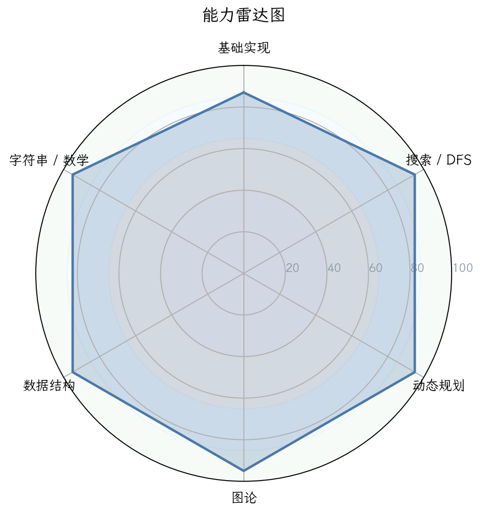
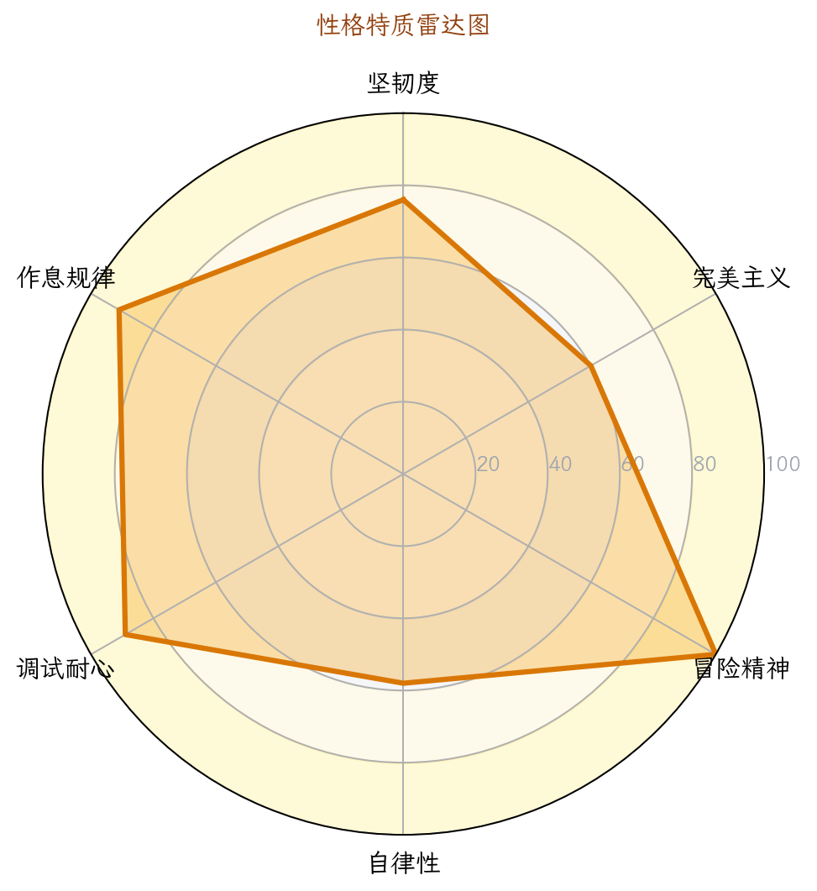
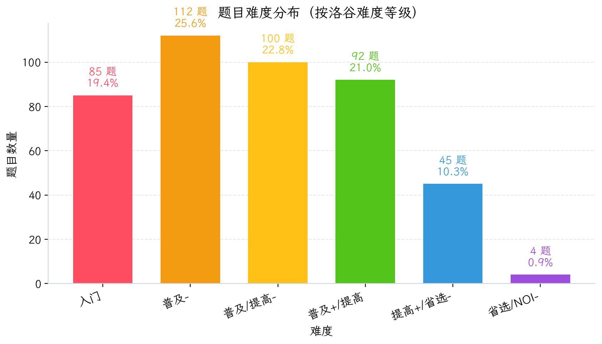
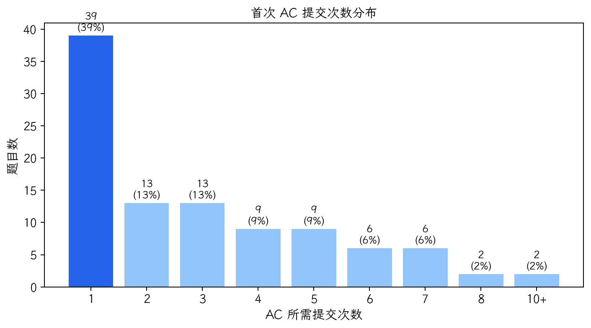
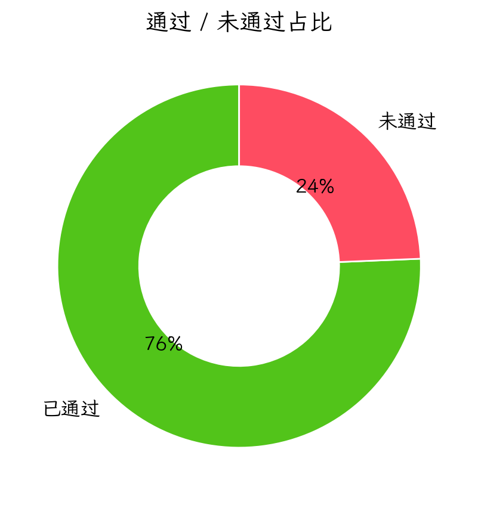
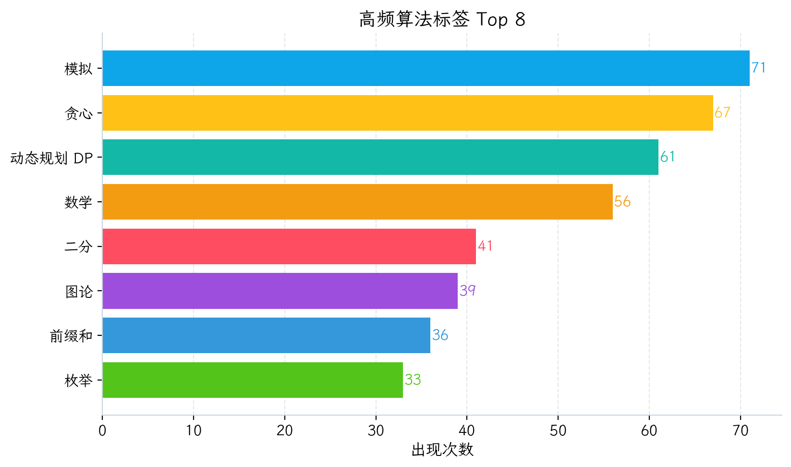

图 1：能力雷达图

图 2：性格画像雷达图

图 3：题目难度分布

图 4：首次 AC 提交次数分布

图 5：通过/未通过占比

图 6：高频算法标签 Top 8
| 洛谷难度 | 题数 | 占比 | 分布图 |
|---|---|---|---|
| 入门 | 85 | 19.4% | 19.4% |
| 普及- | 112 | 25.6% | 25.6% |
| 普及/提高- | 100 | 22.8% | 22.8% |
| 普及+/提高 | 92 | 21.0% | 21.0% |
| 提高+/省选- | 45 | 10.3% | 10.3% |
| 省选/NOI- | 4 | 0.9% | 0.9% |
| NOI/NOI+/CTSC | 0 | 0.0% | 0.0% |
| 级别 | 已覆盖/总数 | 覆盖率 | 掌握度分布 |
|---|---|---|---|
| 入门 | 22/28 | 78.6% | 精通 9项熟练 5项入门 6项初窥 2项空白 6项 |
| 提高 | 27/50 | 54.0% | 精通 4项熟练 1项入门 12项初窥 10项空白 23项 |
| 省选 | 7/10 | 70.0% | 精通 0项熟练 1项入门 2项初窥 4项空白 3项 |
| NOI | 11/43 | 25.6% | 精通 0项熟练 0项入门 5项初窥 6项空白 32项 |
| 掌握度 | 判定标准（AC 题目数） | 颜色图例 |
|---|---|---|
| 精通 | AC ≥ 20 道 | 精通 |
| 熟练 | 10 ≤ AC ≤ 19 | 熟练 |
| 入门 | 3 ≤ AC ≤ 9 | 入门 |
| 初窥 | 1 ≤ AC ≤ 2 | 初窥 |
| 空白 | AC = 0（警示色：未接触该知识点） | 空白 |
下图按 4 个竞赛级别（CSP-J / CSP-S / 省选 / NOI）展示所有考纲知识点的掌握度。果子**大小 + 颜色**都按"掌握度"用绿色深浅表示（精通近黑 / 熟练深绿 / 入门绿 / 初窥浅绿 / 空白白）。把鼠标悬停在果子上可查看 AC 题目数、掌握等级与关联题目的难度。
下图为按 4 个竞赛级别（CSP-J / CSP-S / 省选 / NOI）分别画出的 4 棵"知识树"。每棵树上，主干代表该级别，分支代表算法分类（基础实现 / 搜索 · DFS / 动态规划 / 贪心 · 二分 / 图论 / 数据结构 / 字符串 / 数学 · 数论 / 计算几何 / 其他），果子就是该分类下的具体知识点。果子越大、颜色越深 = 该知识点 AC 数越多 = 掌握越好；灰色小果子 = 该知识点尚未接触（AC=0）。
| 洛谷难度 | 题数 | 占比 | 分布图 |
|---|---|---|---|
| 入门 | 85 | 19.4% | 19.4% |
| 普及- | 112 | 25.6% | 25.6% |
| 普及/提高- | 100 | 22.8% | 22.8% |
| 普及+/提高 | 92 | 21.0% | 21.0% |
| 提高+/省选- | 45 | 10.3% | 10.3% |
| 省选/NOI- | 4 | 0.9% | 0.9% |
| NOI/NOI+/CTSC | 0 | 0.0% | 0.0% |
| 级别 | 总知识点 | 已覆盖 | 覆盖率 |
|---|---|---|---|
| 入门级（CSP-J） | 28 | 22 | 78.6% |
| 提高级（CSP-S） | 50 | 27 | 54.0% |
| 省选级 | 10 | 7 | 70.0% |
| NOI级 | 43 | 11 | 25.6% |
| 级别 | 已通过题数 | 来源标签命中 | 难度命中 |
|---|---|---|---|
| 入门级（CSP-J） | 438 | 48 | 438 |
| 提高级（CSP-S） | 187 | 94 | 141 |
| 省选级 | 90 | 87 | 4 |
| NOI级 | 57 | 57 | 0 |
好的，教练。以下是针对该选手的深度诊断与训练辅导报告。
P26-06-04 08:11 评估对象: 一位努力但陷入瓶颈的准提高级选手 核心诊断: 具备冲击CSP-S一等的基础，但高级算法建模能力薄弱，代码稳定性差，是典型的“暴力-观察”环节断裂的选手。亟需从“能写模板”向“能建模型”转型。
基于提交行为数据，我们为你描绘了一幅详尽的“数字画像”。
| 性格维度 | 星级评分 | 数据支撑 | 教练评语 |
|---|---|---|---|
| 坚韧度 | ★★★★★5/5 | 最大连续训练 10 天；单题最高提交 12 次不放弃 | 你是一位真正的斗士，面对卡题展现出惊人的毅力，这正是冲击金牌的必备品质。 |
| 冒险精神 | ★★★★★4/5 | WA后 14% 的几率在1分钟内快速重交 | 你坚信“大力出奇迹”，但缺乏对错误的审慎思考。这种“赌徒”心态是AC率不高的元凶之一。 |
| 自律性 | ★★★★★3/5 | 活跃率仅 14%；假期（7月）和周末有明显高峰 | 你的训练模式偏向“突击”而非“细水长流”。虽然有爆发的潜力，但缺乏持续、稳定的输出。 |
| 调试耐心 | ★★★★★2/5 | WA后重交间隔中位数仅 4.5分钟；卡题代码常出现严重逻辑断层 | 你的调试是“盲目试错”而非“逻辑推演”。4.5分钟不足以让你完成一次严谨的边界条件推导。 |
| 作息规律 | ★★★★★4/5 | 主活跃于 下午到傍晚 (13-20点)，凌晨0提交 | 这是非常健康的竞赛作息！下午是大多数正式比赛的黄金时间，你的身体已经形成了优秀的记忆节律。 |
| 完美主义 | ★★★★★2/5 | 25.7% 的一次 AC 率；代码注释密度 2.62%，近乎无注释 | 你追求快速实现，轻视代码可读性。对于一次性AC的渴望，反而让你在复杂逻辑面前容易因小失大。 |
解读：
你是一位“冲刺型选手”，拥有极佳的攻坚韧性，但缺乏“工匠型选手”的稳健。你的当务之急是将“拼劲”转化为“巧劲”，把大量低效调试的时间，用在前置的“性质观察”和“代码不变量定义”上。
这些是你投入巨大，但最终未能攻克的“堡垒”，是本次报告的重点分析对象。
| 题目 | 难度 | 提交次数 | 最终状态 | 根因分析 |
|---|---|---|---|---|
| P13977 数列分块入门 2 | 省选/NOI- | 12 | ❌ 未AC | 对分块的“懒标记下传”与“块内重构”边界条件理解模糊，属于数据结构维护不变量失败。 |
| P5767 [NOI1997] 最优乘车 | 提高+/省选- | 11 | ❌ 未AC | 图论建模能力不足，未能将“换乘次数”正确地映射为“最短路上的边权”或“BFS层级”。 |
| P10403 [XSOI-R1] 跳跃游戏 | 省选/NOI- | 9 | ❌ 未AC | 博弈论/记忆化搜索建模失败。可能陷入了DFS暴力枚举，没有发现状态空间中的后效性或循环。 |
| P4683 [IOI 2008] Type Printer | 省选/NOI- | 8 | ❌ 未AC | Trie树 + 贪心/DFS序综合运用失败。只看到Trie的模板，未理解“最长链最后走”的贪心策略。 |
| P7497 四方喝彩 | 省选/NOI- | 8 | ❌ 未AC | 线段树的复杂多标记维护彻底混乱。operator重载的代数正确性未证明，导致pushdown顺序错误。 |
25.7% (远低于优秀标准50%)23.2%特征：
你的代码“第一版正确率”极低。这说明你的解题流程是“写代码 -> 跑样例 -> 发现WA -> 盲目修改”的恶性循环。你将宝贵的时间浪费在了用评测机代替大脑思考的过程中。必须强制自己先在草稿纸上证明解法的正确性，并人工走完非平凡样例，才能开始写代码。
当前水平定位：普及+/提高 向 提高+/省选- 跨越的关键瓶颈期。
| 能力块 | 评分 | 当前等级 | 数据证据 | 已经具备 |
|---|---|---|---|---|
| 基础算法 | 88 | 🟢 精通 | 模拟(71)、贪心(67)、二分(41)、前缀和(36) | 对“思路简单，实现长”的题有极强掌控力，基础思维活跃。 |
| 数据结构 | 78 | 🟡 熟练 | 线段树(27)、并查集(26)、树状数组(22) | 能熟练使用单一、简单标记的线段树。但多标记合并、复杂不变量维护时极易崩溃。 |
| 图论 | 72 | 🟠 入门 | 最短路(24)、生成树(16)、Floyd(4) | 能套模板，但 “建图”环节严重卡壳。无法将非标准最短路问题转化为图模型。 |
| 动态规划 | 70 | 🟠 入门 | DP基础(93)、背包DP(11)、树形/区间DP(0) | 线性DP和背包非常熟练，但仅限于此。 完全不熟悉树形、区间、状压等高级DP模型，这是S级瓶颈。 |
| 字符串 | 68 | 🟠 入门 | Trie(9)、KMP(2)、AC自动机(0) | 停留在单一字符串数据结构的模板使用，缺乏对自动机、Fail树等高级抽象的理解。 |
| 数学 | 75 | 🟡 熟练 | 数学(56)、组合数学(4)、博弈论(2) | 在具体题目中能运用数学工具，但缺乏体系化。对数论、组合计数、多项式等专项几乎空白。 |
诊断结论：
你是一位“偏科严重的应用型选手”。你擅长将已知流程的算法高效实现，但短板在于“设计算法”和“抽象建模”。你的技能树是T字型，横轴不够广，纵轴（数据结构）还不够深。
你名义上在备赛提高级，但你的知识体系是一个“筛子”。大量CSP-S的核心考点你处于🔴空白状态，而你的精力又被少数省选/NOI级知识点分散了。
知识点强弱项 - 🟢 你最擅长的 Top 3: 1. 动态规划基础与背包模型 2. 基础数据结构 (线段树/树状数组/并查集) 3. 基础算法 (贪心/二分/前缀和) - 🔴 你最薄弱的 Top 3 (急需补充): 1. 图论建模与最短路变形 (提高级/核心) 2. 树型/区间/状压 DP (提高级/核心) 3. 数论与组合计数 (提高级/核心)
训练盲区 (当前等级中完全空白的必考知识点) - 🔴 树型DP/树的重心/直径： 0题AC，这是提高组D2的绝对核心。 - 🔴 卡特兰数/容斥原理： 0-1题AC，数学推导能力为零。 - 🔴 最小生成树/欧拉路： 0题AC，图论只学了最短路。 - 🔴 KMP/字符串自动机： 2题AC，仍处于模板背诵阶段。 - 🔴 双向BFS/迭代加深： 0题AC，搜索优化思想缺失。
| 级别 | 总知识点数 | 已接触 | 覆盖率 | 状态 |
|---|---|---|---|---|
| 入门级 (CSP-J) | 28 | 22 | 78.6% | 🟢 基本完备 |
| 提高级 (CSP-S) | 50 | 27 | 54.0% | 🟠 严重不足 |
| 省选级 | 10 | 7 | 70.0% | 🟠 略知皮毛 |
| NOI级 | 43 | 11 | 25.6% | 🔴 几乎空白 |
| 难度 | 通过题数 | 教练评估 |
|---|---|---|
| 暂无评定 | - | - |
| 入门 | 85 | 过分刷低难度题，可能是在找自信，但对能力提升帮助有限。 |
| 普及-/普及/提高- | 212 | 根基深厚，代码实现速度有保障。 |
| 普及+/提高 | 92 | 能力舒适区，单点知识点应用没问题。 |
| 提高+/省选- | 45 | 攻坚区，成功率和效率都不高，需要通过专题训练突破。 |
| 省选/NOI- | 4 | 天花板区，仅靠套模板可以AC，但缺乏对模型本质的理解。 |
| 优先级 | 风险项 | 触发场景 | 比赛症状 | 根因判断 | 训练专题 | 验收标准 |
|---|---|---|---|---|---|---|
| S（高/立即处理） | 图论抽象建模能力为零 (S级-2) | 非标准最短路、差分约束、分层图 | 读不懂题，不知道这是图论题；或者建完图发现算法跑出错误答案。 | 不理解“图”是用来描述关系的数学工具，只会背模板。 |
图论建模 14 天专项：P5767、P2299、P1462等。 | 对于新题，能在10分钟内抽象出图模型的节点和边权，正确率达到80%。 |
| S（高/立即处理） | DP状态设计困难 (A级-4) | 树形DP、区间DP、状压DP | 只会写dp[i]，当问题涉及树、区间或多维约束时，无法下手。 |
DP思维仍停留在“递推”，没有掌握“状态集合”和“决策”的抽象设计方法。 | DP状态设计 21 天专项：P1352、P1040、P1896等。 | 能独立设计出2维以上DP状态，并准确写出转移方程。 |
| S（高/立即处理） | 数据结构多标记维护混乱 (A级-3) | 线段树维护多个lazy_tag |
写完觉得自己很对，一交0分。pushdown逻辑是一团乱麻。 |
没有对节点信息给出严谨的数学定义，operator重载缺乏代数正确性验证。 |
线段树多标记 7 天专项：P3373、P1471、P7497。 | 能徒手写出维护乘法和加法标记的线段树，并证明其正确性。 |
| A（中/近期处理） | 高级字符串结构与自动机缺失 (B级-6) | KMP/AC自动机/SAM的灵活运用 | 只会字符串哈希，面对多模式串匹配或者复杂字符串问题直接放弃。 | 不理解自动机的“状态转移”思想，将字符串与图论、DP等知识割裂。 | AC自动机 7 天专项：P3808、P3796、P2336。 | 能写出AC自动机模板，并解决“Fail树”上的DP或树剖问题。 |
| A（中/近期处理） | 数学与组合计数推导能力弱 (S级-1) | 需要结合数论/组合数学的题目 | 只能打表找规律，找不出就暴力，拿不到正解分。 | 缺乏“统计对象集合”的思维，没有训练过计数 DP 或容斥原理。 | 计数DP与容斥原理 14 天专项：P2606、P1450、P5664。 | 能使用容斥原理或组合数推导出正解公式，替代暴力DFS。 |
优先级说明：S（高/立即处理） · A（中/近期处理） · B（低/可后置）。
来自资深架构师视角的 Code Review
#define int long long，这是一个巨大的优点！这表明你对变量类型的内存占用和溢出有基本意识，避免了无差别的内存浪费和性能下降。#define ll long long 的使用恰到好处。71.5% 的 ios::sync_with_stdio 使用率，以及 92.6% 的 cin/cout 使用率，说明你已经习惯了C++11以上的现代I/O风格，这能为你在复杂数据结构题中节省大量格式化输入输出的时间。致命缺陷：0% 的现代C++特性使用（auto, range-for）
map 或 vector 时仍用下标或长类型名。auto 简化变量声明，使用 for (auto &x : vec) 遍历容器。你的代码长度中位数只有34行，说明你写的多是短程序。越长的程序，越需要这些特性帮忙梳理逻辑。致命缺陷：贫瘠的命名与注释（密度2.62%）
a, b, x, n, c, val, y, d, cnt...。这对于超过50行的代码是不可维护的。注释量几乎为0。P7497 四方喝彩 这类需要维护多个lazy_tag的线段树时，当你自己看到 a[k].on == 0 时，你还记得 on 代表什么吗？你的失败代码恰恰证明了这一点。is_covered, sum_of_squares, lazy_add_mark。复杂逻辑块前必须用1-2行注释说明意图。坏习惯：钟爱非标准的运算符重载
P7497 中，你写了 friend void operator*=(tree &b,ll c) 和 friend void operator+=(tree &b,ll c)。operator*= 通常返回自身的引用，而你的返回类型是 void，这在复杂的表达式中会引发编译错误或未定义行为。而且这破坏了结构体的内聚性，把外部操作强行塞进了结构体内部。void apply_mul(ll c)，这比花里胡哨的运算符重载清晰100倍。目标：填平CSP-S考纲中的空白，从模板到初步建模。 - 树型DP专项 - 没有上司的舞会 (P1352) - 树型DP模板 - 二叉苹果树 (P2015) - 树型背包 - 战略游戏 (P2016) - 树上最小点覆盖 - 图论建模专项 - 最优乘车 (P5767) - 重新建模，用BFS做最短路 - 小木棍 (P1120) - 搜索剪枝 - 无线通讯网 (P1991) - 最小生成树变种 - 字符串基础 - KMP模板 (P3375) - 字典树 (P8306)
目标：深度掌握复杂数据结构和核心算法模型，提升代码稳定性。 - 线段树深度专题 - 线段树2 (P3373) - 强制徒手实现加法+乘法标记，验收代码稳定性。 - 方差 (P1471) - 维护区间和与区间平方和，练习多值维护。 - 四方喝彩 (P7497) - 重新分析代码，用非运算符重载的法子重写。 - DP状态设计 - 互不侵犯 (P1896) - 状压DP入门 - 石子合并 (P1880) - 区间DP - 能量项链 (P1063) - 环形区间DP - 图论进阶 - 差分约束 (P5960) - 最优贸易 (P1073) - 分层图最短路
目标：综合运用，赛前模拟，固化“先证明，后编码”的流程。 - 数学与计数 - 组合数问题 (P2822) - 喵了个喵 (P9576) - 容斥原理或计数DP - 综合图论 - 货车运输 (P1967) - 最大生成树+LCA/重构树 - 天天爱打卡 (P9871) - 重新分析，思考DP优化 - 赛前模拟 - 每周至少2次独立完整的模拟赛，严格限时，赛后输出四段式复盘报告。
🔴 紧急: 改造调试流程，杜绝“猴子修补”
将WA后重交的4.5分钟，强制延长到至少20分钟。在这20分钟内，必须完成三件事：① 重新审计算法的数学性质；② 构造能卡掉自己代码的小数据并用手算；③ 用 cerr 或 debugger 定位到出错的代码“不变量”。
🔴 紧急: 执行“四段式复盘法” (S级-9) 每AC一道题，强制输出文档：
🟡 重要: 启动“图论建模”与“DP状态设计”专项训练 这是你从提高-向提高+跨越的绝对瓶颈。请遵照第九章的题单，集中火力，在1个月内形成初步的模型感。
🟡 重要: 改善代码命名，杜绝所有无意义的单字母变量 从下一道题开始，超过30行的代码，核心数组和变量名前必须包含其数学或物理含义。这是帮你理清长逻辑的救命稻草。
🟡 重要: 限制低效刷题，跳出“舒适区”
立即停止刷 入门 和 普及- 的低难度题目来找自信。你应该感觉到痛苦，感觉到自己不会的太多，这才是在走上坡路。把时间投入在提高+/省选-的题目攻坚上。
🟢 建议: 重构你的线段树代码库
不要满足于能跑。你的目标应该是写出一份像艺术品的线段树代码，清晰定义Node结构体、merge和pushdown逻辑，并明确各标记的优先级。这将是你所有数据结构题的压舱石。
🟢 建议: 开始探索现代C++特性
尝试在你的新代码里用auto和range-for。这会让你把注意力更集中在算法本身，而不是无关的语法细节上。
e) 最终正解的推导与核心代码结构
BFS。对于起点 $1$ 到终点 $N$ 的距离 $dist$，答案就是 $dist - 1$。如果无法到达，则是 NO。// 对每一条输入线路 line，建立边 for (auto &line : bus_lines) { for (int i = 0; i < line.size(); ++i) { for (int j = i + 1; j < line.size(); ++j) { adj[line[i]].push_back(line[j]); adj[line[j]].push_back(line[i]); } } }
// BFS 求最短路 int dist = bfs(1, N); if (dist == -1) cout << "NO" << endl; else cout << dist - 1 << endl; ``` * f) 推荐同类题 - P2299 【懒人请进】：几乎一模一样的建模思想，练习将“单向可达关系”转化为图的边。 - P6833 [Cnoi2020]雷雨：引入“多源最短路”的概念，也是将非标准问题抽象为图论的经典题。
on）。pushdown 的合并顺序就绝对不能错。乘法标记永远比加法标记更新得更晚。e) 最终正解的推导与核心代码结构
is_active: 该区间是否可用。sum_active: 激活的元素和。count_active: 激活的元素个数。lazy_mul, lazy_add: 仅在is_active时有效，且 lazy_mul 优先级高于 lazy_add。// 清晰的标记应用函数 void apply_mul(int node, long long mul_val) { if (!tree[node].is_active) return; tree[node].sum_active = tree[node].sum_active * mul_val; tree[node].lazy_mul = tree[node].lazy_mul * mul_val; tree[node].lazy_add = tree[node].lazy_add * mul_val; }
void apply_add(int node, long long add_val) { if (!tree[node].is_active) return; tree[node].sum_active += add_val * tree[node].count_active; tree[node].lazy_add += add_val; }
// pushdown：先乘后加！
void pushdown(int node) {
if (tree[node].lazy_mul != 1) {
apply_mul(left_child, tree[node].lazy_mul);
apply_mul(right_child, tree[node].lazy_mul);
tree[node].lazy_mul = 1;
}
if (tree[node].lazy_add != 0) {
apply_add(left_child, tree[node].lazy_add);
apply_add(right_child, tree[node].lazy_add);
tree[node].lazy_add = 0;
}
// 处理封禁/解封...
}
``
* **f) 推荐同类题**
- **P3373 【模板】线段树 2**：这是**必须**先闭眼AC的基础。先别管四方喝彩，回去把这道题用我上面这种“清晰函数”的风格重写3遍，直到你能不加注释地将pushdown一气呵成写对。
- **P1471 方差**：练习维护区间平方和，这需要用到sum和square_sum` 两个值，是综合运用标记管理的好题。
P10403 跳跃游戏：SG函数/记忆化搜索。不要直接DFS搜索所有路径，那是指数级。为每个格子定义一个mex或win/lose状态，用记忆化搜索剪枝。仔细处理“循环”状态。
P13977 数列分块入门 2：分块懒标记。你的错误在于没有想清楚，当一个块被部分修改时，需要“重构”这个块（重新排序）。这是分块的标准操作。时间复杂度 $O(M \sqrt{N} \log{\sqrt{N}})$。
P4683 [IOI 2008] Type Printer： Trie + DFS。建出所有单词的Trie树。关键贪心：最长的那个单词所对应的链，在最后遍历。DFS遍历Trie树时，将最长单词所在的子树放在最后访问，这样回溯总距离最短。
P9113 [IOI 2009] Hiring：贪心 + 堆。按“性价比” $S/Q$ 排序，枚举谁是最低的性价比。然后用一个大根堆维护当前选中的人，当总钱数超了，就踢掉 $Q$ 最大的人。你使用线段树是可行的，但常数大且易错，用堆更简洁。
P9196 [JOI Open 2016] 销售基因链：Trie + 离线查询/二维数点。将字符串的正序和逆序各建一个Trie，问题转化为在两个Trie的DFS序构成的二维平面上，求矩形内点的个数。经典的可持久化线段树或离线树状数组问题。你的代码只有排序和暴力匹配，复杂度是 $O(MN)$ 的，必然超时。